Case File
Stands alone. No other case needs to be read first. Choose another by its promise.
- Pages — 96
- Genre — Epic Fantasy · Dungeon Fantasy · War & Military Fiction
Ashkevar is a poor kingdom before it is anything else — barley, debt, and the patient silence of a god who answers the honest but never the desperate. It's debt, not vision, that sends a shepherd up a hillside above Har-Peleg looking for free firewood, and debt that has him and four others prying open a doorway three generations had already stopped seeing. What's behind it isn't a ruin: a hundred descending levels, a guardian at every fifth, a chest at every tenth, and — rarer, and stranger — a vial of something that can pull the dying back from wounds that should have killed them.
It's the highland kingdom of Vantashen, not Ashkevar, that turns the discovery into a war. A young prince — Vartaz, King Torvash's youngest, delving in disguise to prove himself away from his father's court — reaches a guarded hall at the same moment a seasoned local party does, and a mechanism built to clear a room for six fighters — never built to recognize two kingdoms colliding in one doorway — does exactly what it was built to do. His father doesn't wait for a fuller account before choosing war, and for three years two kingdoms bleed each other over a death neither side's histories will ever describe accurately, while underneath both armies the hillside resets itself every night and keeps paying gold to whoever's left standing by morning.
The war ends the way these things tend to: a peace with no victor, a marriage that quietly merges two crowns, and one woman — Nairi, the dead prince's own sister — who eventually descends far enough to hold the actual proof of what happened in her own two hands. What she decides two exhausted kingdoms are owed instead of that truth is the real center of Case 0157. Something patient files the whole of it away regardless, and finds her choice, on reflection, more worth preserving than anything its own guardians ever did.
Principal Subjects

Vartaz
A prince who travels to Ashkevar in disguise to prove himself — and dies to a mechanism, not a rival.

Nairi
Vartaz's own sister, who eventually holds the literal proof of how he died in her own two hands — and says nothing.

Torvash
A king who chooses war out of grief for a son the dungeon killed by simple bad timing.

Doreth
Prince Vartaz's tutor of eleven years, who turns his own grief for the boy into a war he tells himself is a monument.

The Golden Catacomb
A hole in a hillside no one had thought worth digging for three generations — until someone did.

The Observer
The old man at the bottom of the hole, who built every level of it and remembers everything anyone ever left behind.
Additional Case Records
29 additional subjects documented
 Hovan
Hovan Tirtzah
Tirtzah Vahan
Vahan Oren
Oren The White Draught
The White Draught Yudith
Yudith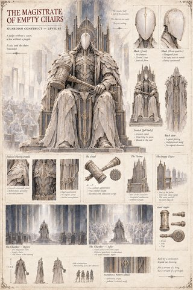
The Magistrate of Empty Chairs Sentinel of Dust
Sentinel of Dust Elad
Elad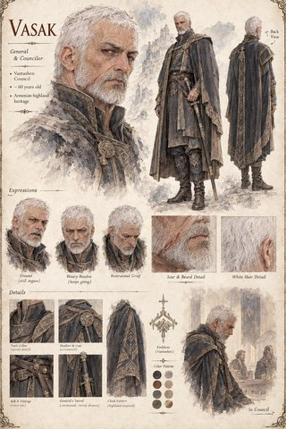
Vasak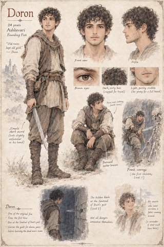
Doron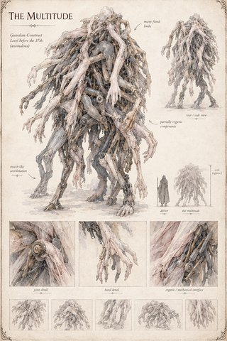
The Multitude Araxi
Araxi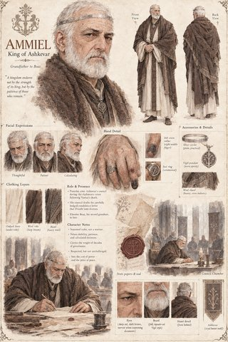
Ammiel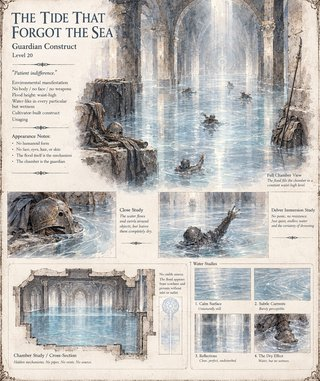
The Tide That Forgot the Sea Peled
Peled The Weaver Who Outlived Her Thread
The Weaver Who Outlived Her Thread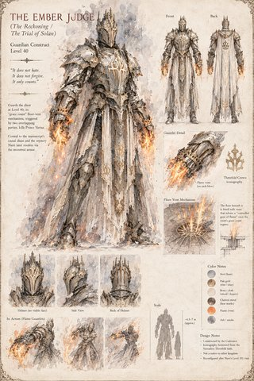
The Ember Judge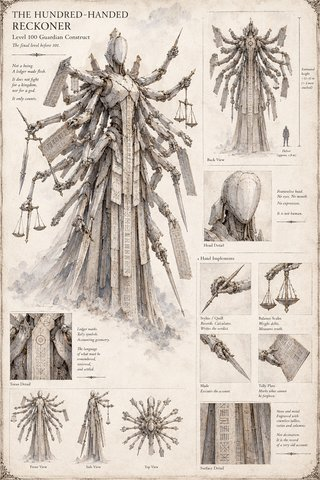
The Hundred-Handed Reckoner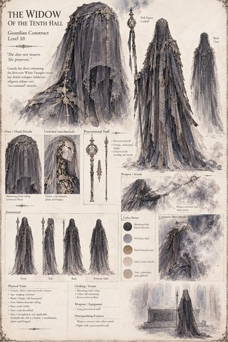
The Widow of the Tenth Hall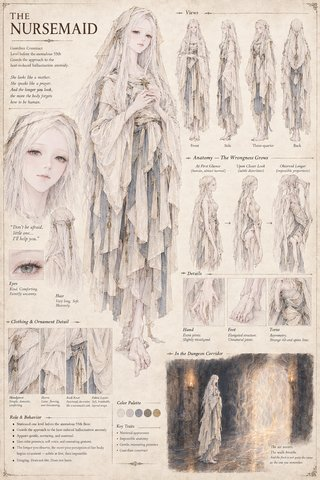
The Nursemaid Tamir
Tamir Boaz
Boaz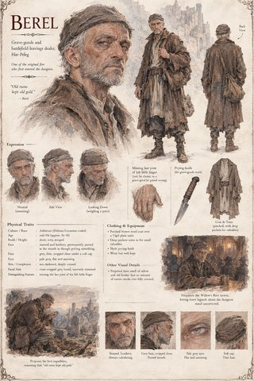
Berel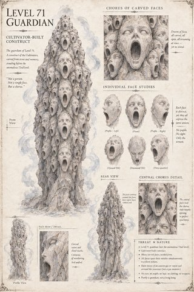
Level 71 Guardian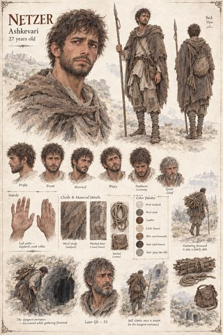
Netzer Ezra
Ezra Shira
Shira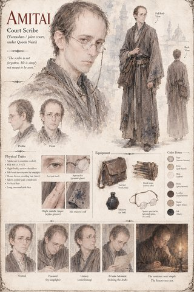
Amitai
Records
-

The entrance is found above Har-Peleg.
-

The founding five, descending.
-

The founding five meet the Catacomb's first guardian.
-

The Sentinel of Dust ends Doron's five levels.
-

The Widow of the Tenth Hall, unveiled.
-

The Widow's chest, and the first Draught.
-

The Ember Judge, doing what it always does.
-

The grace count runs out.
-

Vartaz, and the floor that didn't know him.
-

-

Nairi begins the private ledger.
-

-

Oren reads the wall.
-

The siege of Har-Peleg.
-

The White Draught, rationed.
-

The Magistrate of Empty Chairs holds court.
-

The Nursemaid falls.
-

The Hundred-Handed Reckoner, and the hoard.
-

The Observer hands Nairi the armor.
Read This Book
Related Cases
 Case 0000The Sword of ValeriaSame catalyst class: MythicShared faith: Faith of Ardwen
Case 0000The Sword of ValeriaSame catalyst class: MythicShared faith: Faith of Ardwen Case 0156The Purging of CharsianonSame catalyst class: MythicShared faith: Faith of Ardwen
Case 0156The Purging of CharsianonSame catalyst class: MythicShared faith: Faith of Ardwen Case 4417The Iron Stiletto WarShared faith: Threefold Crown
Case 4417The Iron Stiletto WarShared faith: Threefold Crown Case 0188The Songs Never Mention the CatsSame catalyst class: Mythic
Case 0188The Songs Never Mention the CatsSame catalyst class: Mythic Case 2140The Third GrainShared faith: Threefold Crown
Case 2140The Third GrainShared faith: Threefold Crown Case 2231The Stone of the Clean HandShared faith: Threefold Crown
Case 2231The Stone of the Clean HandShared faith: Threefold Crown